הרעיון מהרילס: בסיס כהה ושקט, וצבע מבטא אחד שמופיע מעט מאוד. היום הכתום "נבלע" בתמונות החמות של העץ והאש ומופיע בכל מקום. בשלוש ההצעות הבסיס קר יותר, והמבטא מופיע רק במילה "ברזל.", בכפתור הראשי ובמחיר. כל השאר ניטרלי. אפשר לנסות חי: localhost:8080/?look=forest, ?look=red, ?look=arc (ו-?look=default לחזרה).
כתום על עץ ואש. המבטא בכפתור העליון, בשני הכפתורים, בנקודות, בשעון ובוואטסאפ.
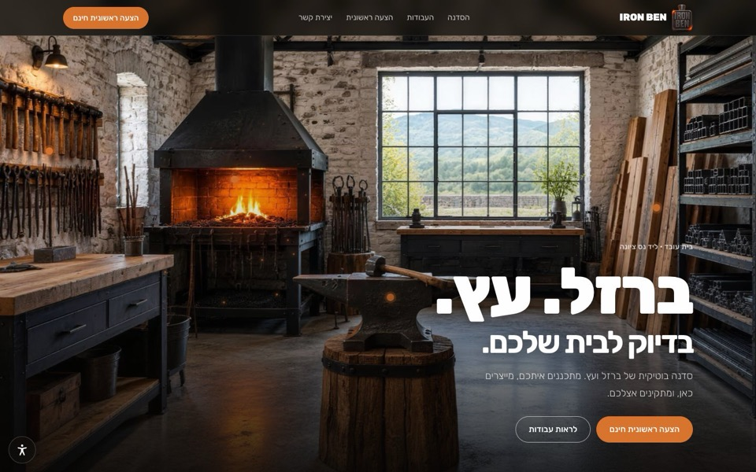
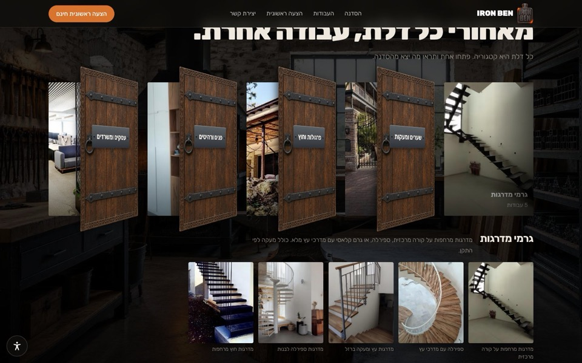
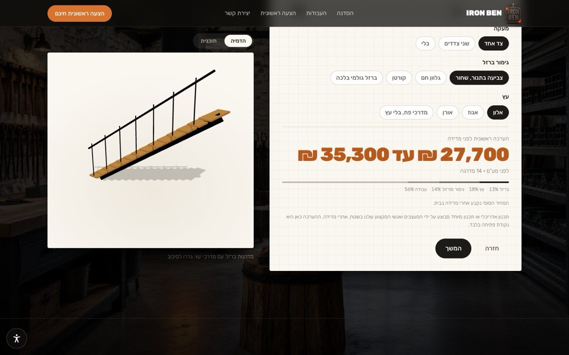
השינוי הקטן ביותר: בסיס ירוק-יער כמו ברילס, והכתום של הסדנה נשאר. על ירוק הוא כבר לא נבלע.
?look=forest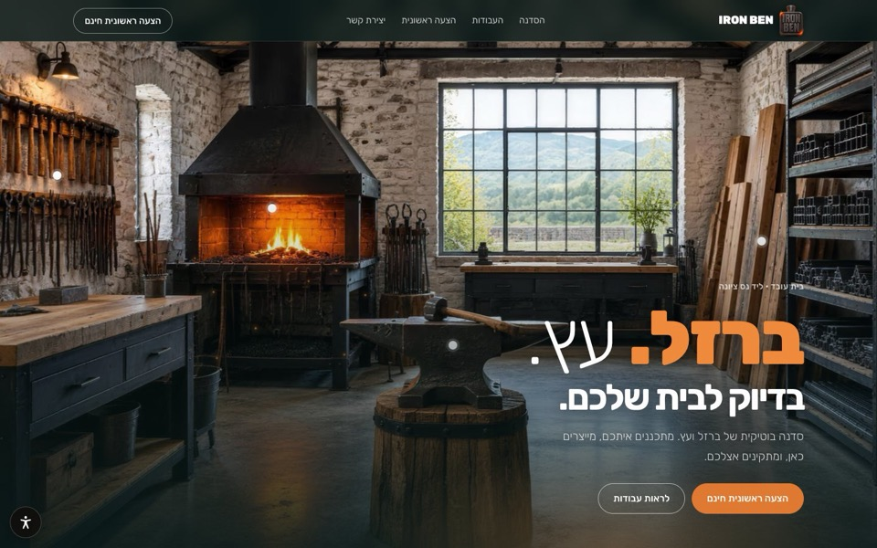
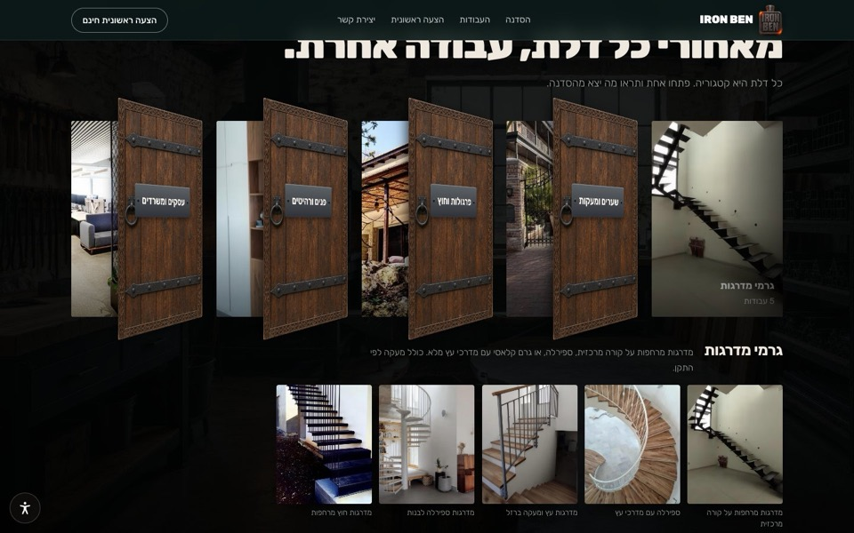
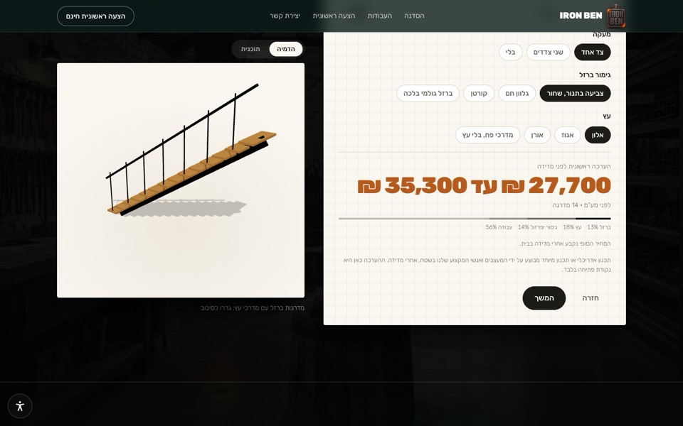
הכי קרוב לרילס: אדום של ברזל מלובן על פחם-יער. הכי דרמטי, והכי "מעצב".
?look=red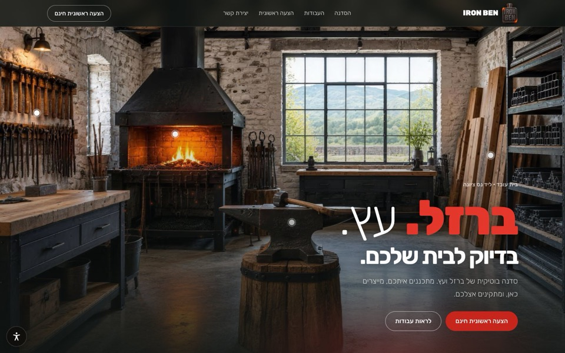
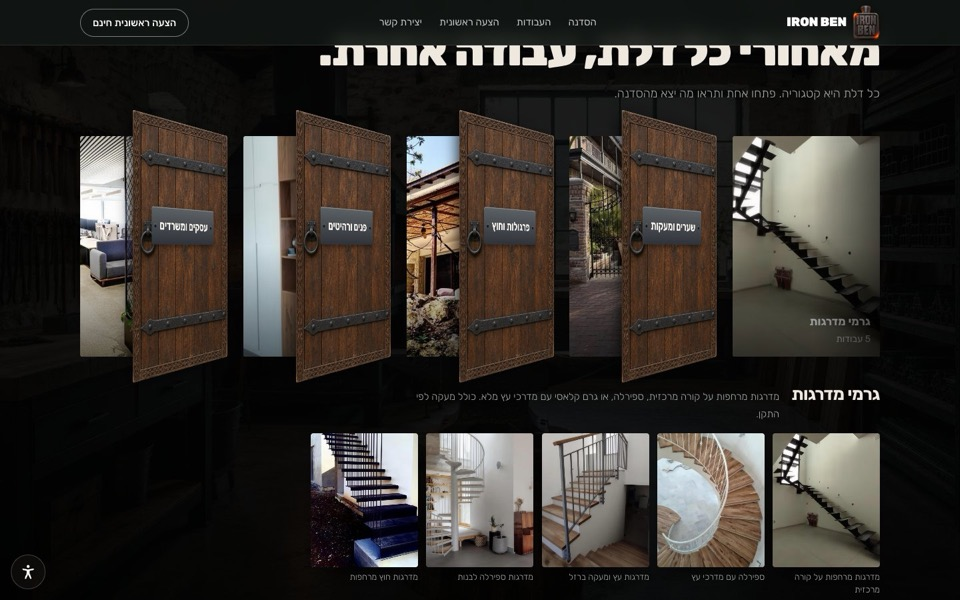
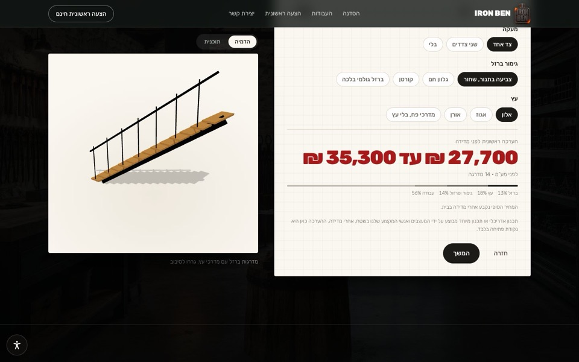
הכי לא צפוי: הכחול של קשת הריתוך. משלים לתמונות החמות, ולכן בולט הכי חזק. גם הכי "טכנולוגי".
?look=arc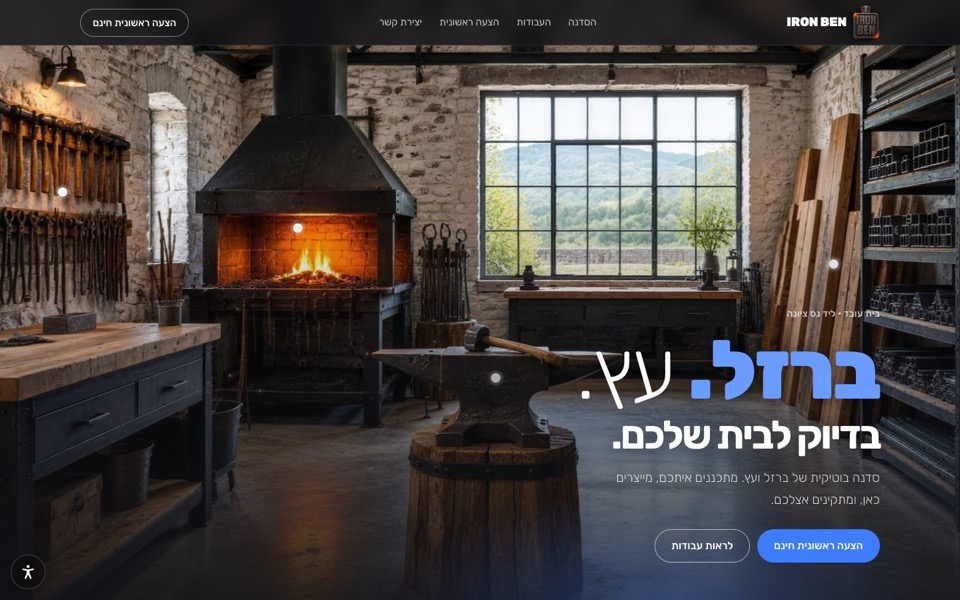
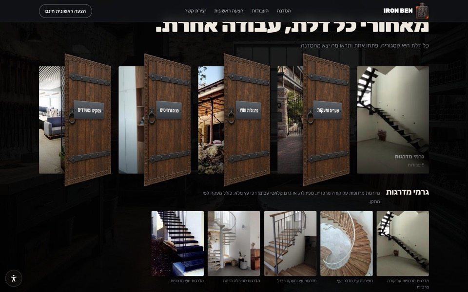
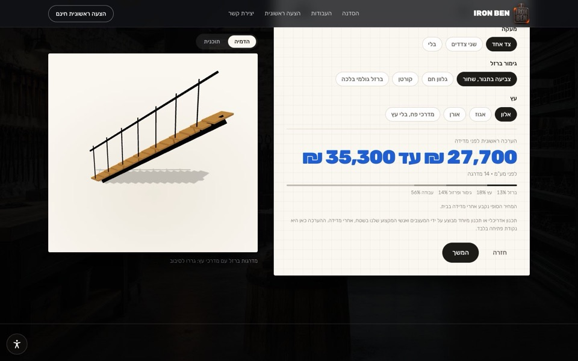